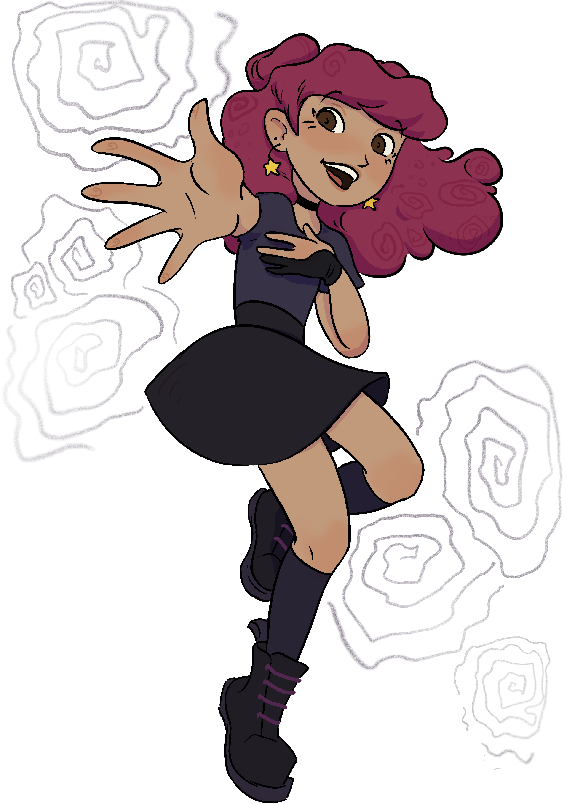

About me
I am a graphic design graduate currently continuing my studies in Software Engineering at VIA. I am naturally curious and enjoy learning by exploring new ideas, combining creativity with technical problem-solving. I value hands-on work and enjoy experimenting, whether through design, development, or creative concepts.
Interests
I spend much of my free time creating—painting, sculpting, crocheting, or experimenting with digital tools. I am drawn to the process of making things and exploring different forms of expression.
I also enjoy films and animation that build strong emotional or imaginative worlds, from the warmth and storytelling of Don Bluth’s films to the darker, more magical atmospheres found in the work of Guillermo del Toro.